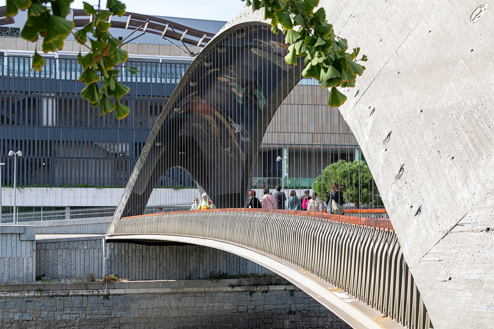

Madrid Río
Parque lineal de más de seis kilómetros junto al río Manzanares, con diecisiete zonas de juego infantil, carriles bici y la conocida "playa urbana" de fuentes a ras de suelo para refrescarse en verano. Conecta varios barrios de la ciudad sin necesidad de coche y combina deporte, paseo y juego libre en un mismo recorrido. Un plan gratuito y muy flexible, fácil de adaptar a cualquier edad.
Pasarela Histórica, Paseo de las Yeserías, 0, Madrid Visitar web oficial